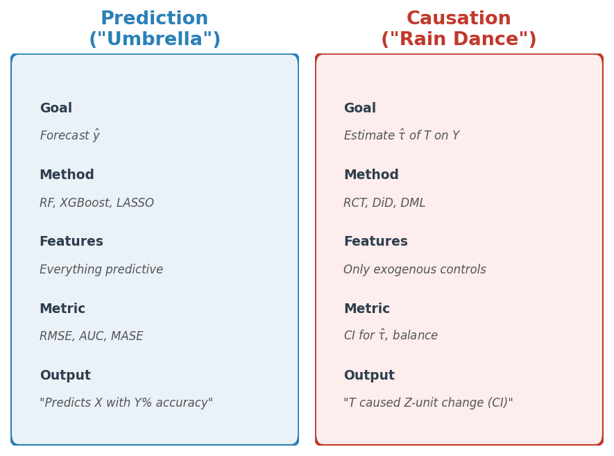
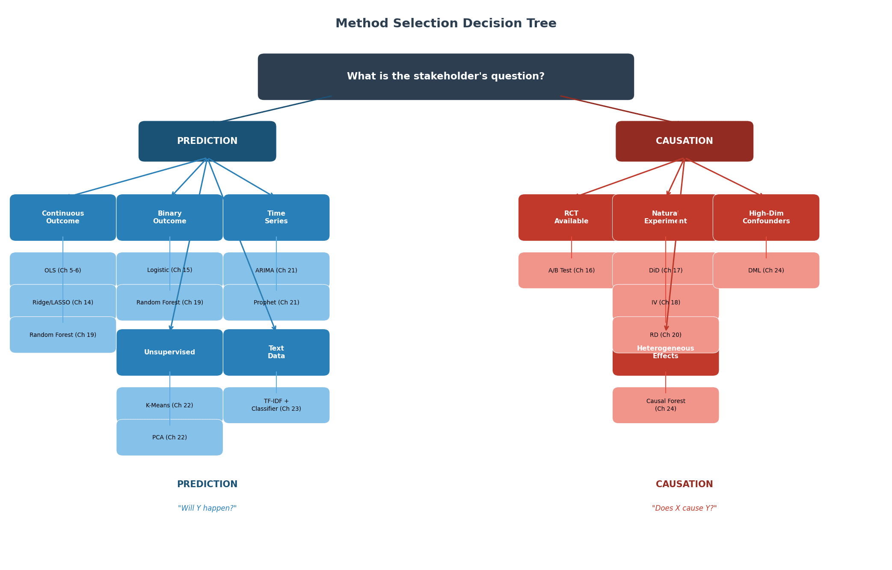
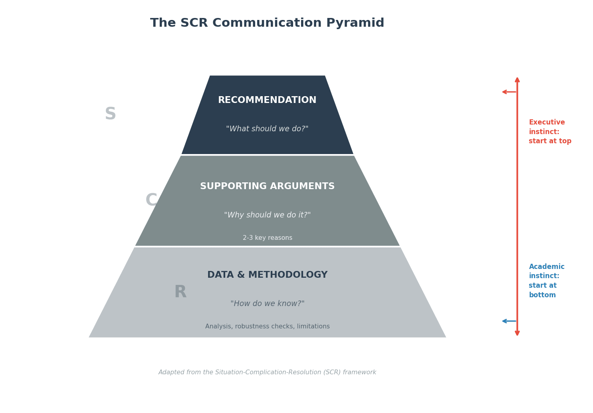
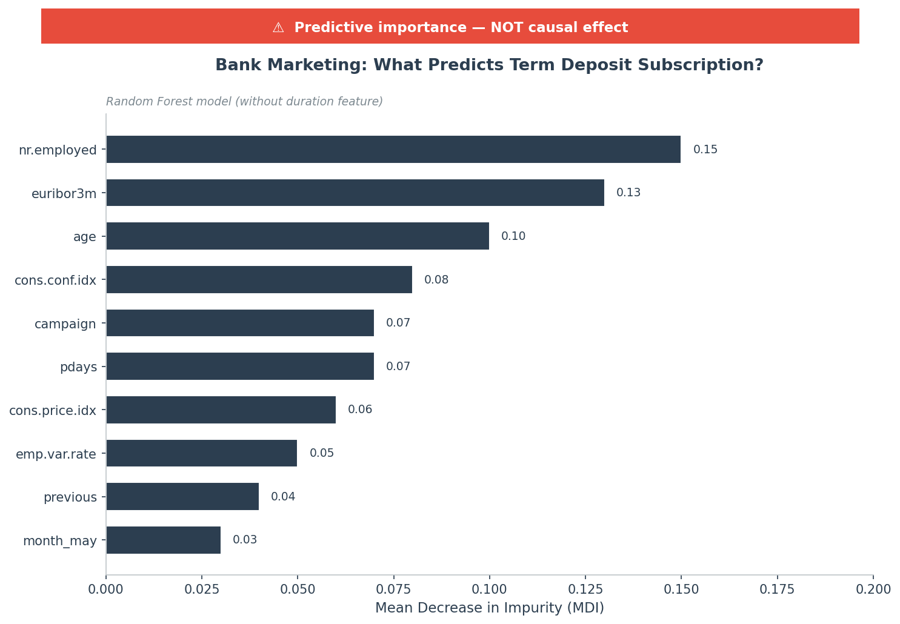
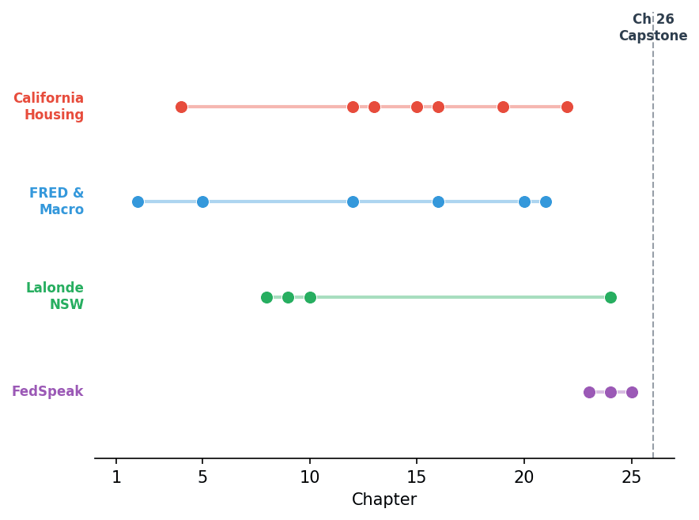

ECON 5200 — Topic 26 of 26
The bridge between being right and being useful
Dr. Richeng Piao
LO1. Distinguish prediction policy problems from causal policy problems (Kleinberg et al.)
LO2. Execute a complete analysis pipeline from question framing to visualization (lab)
LO3. Evaluate whether recommendations follow logically from evidence with honest uncertainty
LO4. Deliver a verbal recommendation and defend under adversarial questioning (lab)
Congress legislates a 10% benefit increase funded entirely by new revenues.
CBO scores it as a 13% reduction.
Same fiscal reality. Opposite conclusions.
BCG (2024): 78% of organizations integrated advanced analytics.
80% reported zero tangible impact.
70% of the gap: failure to communicate.
Being right is necessary but insufficient. You must also be useful.

Kleinberg, Ludwig, Mullainathan & Obermeyer (2015)
UCI Bank Marketing: 41,188 telemarketing contacts
PREDICTION
"Which customers should we call next?"
Random Forest → rank by probability
Include everything predictive
"Call these 5,000 first — 23% vs 11%"
CAUSATION
"Does calling cause subscriptions?"
DML → isolate treatment effect
Exclude endogenous duration
"Calling causes +X pp (95% CI: [a, b])"
The CEO asks: "Does calling a customer actually cause them to subscribe?"
Which analytical approach should you use?
This is a rain dance problem — the CEO asks about causation, not prediction.
Why not A? RF gives feature importance, not causal effects. Why not C? Selection bias. Why not D? Duration is endogenous.

Including duration (call length) in the Bank Marketing model boosts accuracy significantly.
Why is including an endogenous variable a problem for the causal question but perfectly fine for the prediction question?
Format: Think (2 min) → Pair (2 min) → Share (2 min)

Minimum viable deliverable: 1 visual + 1 claim with CI + 1 recommendation
✗ Don't Say
"The result is not significant"
"p = 0.07, close to significant"
"We failed to find an effect"
✓ Do Say
"Best estimate: $900 increase (95% CI: -$300 to $2,100)"
"Cannot rule out zero, but point estimate is positive and meaningful"
"Need n=5,000 to detect this size effect"
Spiegelhalter's principle: Translate to natural frequencies. "Out of 100 forecasts with this uncertainty, about 15 would result in recession."
You present: "Program increases earnings by $900 (95% CI: -$300 to $2,100)."
The VP responds: "So it doesn't work."
What is your best response?
Acknowledge uncertainty honestly, maintain the positive point estimate, and propose a constructive next step.
A is p-hacking adjacent. C conflates "can't reject null" with "no effect." D is specification searching. Honest uncertainty builds trust.

If nr.employed is the top feature, a naive presentation concludes: "Employment drives deposits."
But: It's a confounder — the state of the economy affects both marketing strategy and savings behavior.
The fix: Label every chart with "Predictive importance, not causal effect." If the question is causal, switch to DML.
Problem: Selection bias — funded businesses differ from unfunded ones.
Solution: Large-scale RCT — randomly excluded eligible businesses as control.
Result: 27 pp revenue growth boost (2023-2025)
S
Merchant growth = platform growth
C
Lending causally drives growth
R
Scale aggressively → $1.9T volume
Stripe's data scientists had two options for presenting the RCT results to the CEO:
(1) 50-page NBER-style working paper (2) One-page SCR memo
They chose the memo. The CEO funded a $1.9 trillion platform. Was that the right call?

The same data, analyzed with increasingly sophisticated tools, reveals deeper structure.
The tools are in your hands. The question is whether you can choose the right one and explain your choice.
1. Before choosing a method, ask: prediction or causation?
2. The "So What" Pyramid: lead with the recommendation, not the methodology.
3. Minimum viable deliverable: 1 visual + 1 claim + 1 recommendation.
4. Honest uncertainty builds trust. Never present a point estimate without bounds.
5. The 25-chapter toolkit is only as valuable as your ability to choose the right tool and explain your choice.